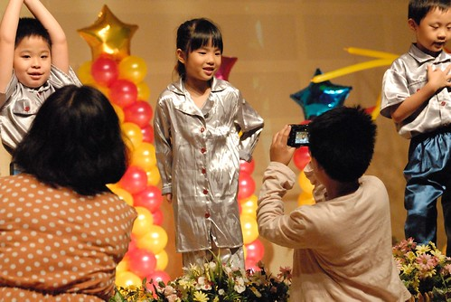
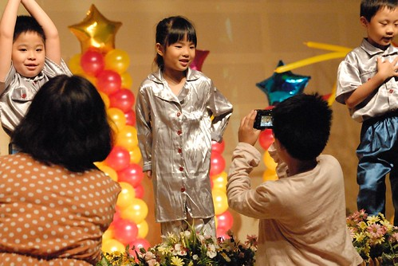

今天是我當媽媽以來 第一次沒有任何小人陪伴的夜晚 下午我跟徹爸兩人打趣說”晚上什麼時候會開始想他們” 兩人相視而笑”應該還好吧” 果然! 吃完晚飯沒多久 徹爸首先發難”沒有他們還真是有點無聊” 是阿! 沒有徹愛的家裡果然怪怪的 少了很多點什麼… 不過我們有聽阿徹一早的交代”你跟爸爸今天就好好去約個會” 我們不用趕時間的看了場電影 逛了些街 還破天荒各自吃了好大一碗的冰淇淋 我們吃著越吃越甜的冰 說了好幾次的”可以帶阿徹他們來吃 他們一定很喜歡…” 我們真是上癮很深的父母 不過很高興我們手上拉著的風箏線又可以往天空多放一點了~
畢業典禮那一天早上 我突然恍然大悟的跟愛愛說”哇! 你唸了五年幼稚園 如果是小學那就是唸完五年級了耶” 一年級到五年級 這麼一想後 的確是很恐怖的五年阿! 不過很佩服我們的愛愛除了前陣子的某一天外 每天都是開開心心的去上學 每天都有跟我們說不完的學校事 自己的事 每天都能讓我們感受到她的認真 她的學習 她的成長 曾經我跟徹爸還難以想像愛愛長大變成小女生 變成小學生會是什麼樣 會不會就不可愛了 沒想到這麼多年經過 我們依然覺得那個即將成為小學生的愛愛好可愛 而且還多了份美麗… 而這一刻 我也反到不會擔心愛愛的以後 就如下午逛街時 看到那我喜歡的衣裳 我說”以後愛愛穿一定很好看” 我越來越能想望吾家的有女初長成! 恭喜我們的愛愛在2012年的7月真的從幼稚園畢業了!!! 
(以上是寫於前一天(8/9)的晚上 本想在這有紀念意義的一天寫完有意義的這篇的 沒想到沒小孩的兩老墮落於沙發上的消夜與第一次嚐鮮的鳳梨啤酒 殘念…..) 愛愛中班時後 因為某些理由 我沒有讓愛愛參加應該去歡送大班的畢業典禮 今年5月開始練習畢業致答詞時 愛愛問我”今年我可以去參加畢業典禮嗎” 我笑說”當然會! 那是你的畢業典禮 當然一定參加” 愛愛好認真的練習他的致答詞 練到不管是不是她的台詞都背的滾瓜爛熟 一切就為了7/22屬於他們的重要日子 雖然有那麼點捨不得以後沒法跟維尼熊的小朋友每天一起玩 但愛愛超興奮自己要畢業了 而今晚也是我們經歷七年 最後一次參加幼稚園的盛會 我也真的有種熬出頭的欣慰阿! 畢業晚會的一開始由三班畢業班級分別以陸海空三軍造型出場表演各具意義的歌曲  以往活動總會在一開始緊繃著臉的愛愛 今天晚上絲毫沒有緊張的模樣
以往活動總會在一開始緊繃著臉的愛愛 今天晚上絲毫沒有緊張的模樣  而阿徹哥哥今晚則是比爸媽還賣力的錄下/拍下愛愛的每一個表演 每一刻 暖場過後 畢業生們逐一被唱名上台 每個小孩看起來都與記憶中的模樣不一樣了 亭亭玉立 落落大方
而阿徹哥哥今晚則是比爸媽還賣力的錄下/拍下愛愛的每一個表演 每一刻 暖場過後 畢業生們逐一被唱名上台 每個小孩看起來都與記憶中的模樣不一樣了 亭亭玉立 落落大方  大家大聲朗讀的畢業生致答詞 沒有難過倒是精神抖擻 園長逐一頒發的畢業獎狀 恭喜大家畢業了!
大家大聲朗讀的畢業生致答詞 沒有難過倒是精神抖擻 園長逐一頒發的畢業獎狀 恭喜大家畢業了!  小朋友輪流上台領取各種不同的畢業禮物 每份禮物人人皆有 大家都是提滿滿的回家
小朋友輪流上台領取各種不同的畢業禮物 每份禮物人人皆有 大家都是提滿滿的回家  光榮的時刻結束後是每一個畢業生逐一與家人的合照紀念 然後中大班們分別上台做英文歌舞表演
光榮的時刻結束後是每一個畢業生逐一與家人的合照紀念 然後中大班們分別上台做英文歌舞表演  這回有看出來愛愛他們化身為警察與消防員嗎
這回有看出來愛愛他們化身為警察與消防員嗎  愛愛真的神氣又俏皮阿
愛愛真的神氣又俏皮阿  歌曲結束後的定點照相 阿徹哥哥依舊賣力的一馬當先  媽媽我則坐在位置上 靜看這一切 不過愛愛看到坐在座位上揮手的我也開心的向我揮手回應 再一次的表演結數是園長kitty媽咪的祝福 才一上台 她的眼眶就紅了 再與家長看著一個個從幼幼班念到畢業的晨陽寶寶從2 3歲到現在7 8歲的照片 她的聲音哽咽不已 而我看著螢幕上一張張愛愛從稚幼開始的轉變與成長 我滿身雞皮疙瘩
歌曲結束後的定點照相 阿徹哥哥依舊賣力的一馬當先  媽媽我則坐在位置上 靜看這一切 不過愛愛看到坐在座位上揮手的我也開心的向我揮手回應 再一次的表演結數是園長kitty媽咪的祝福 才一上台 她的眼眶就紅了 再與家長看著一個個從幼幼班念到畢業的晨陽寶寶從2 3歲到現在7 8歲的照片 她的聲音哽咽不已 而我看著螢幕上一張張愛愛從稚幼開始的轉變與成長 我滿身雞皮疙瘩  最後是大班 然後加入中班與全體老師們的大合唱 “讓全世界為我們加油” 所有台下台上的大人們都在為這群即將進入下一階段的孩子們 祝福與加油!
最後是大班 然後加入中班與全體老師們的大合唱 “讓全世界為我們加油” 所有台下台上的大人們都在為這群即將進入下一階段的孩子們 祝福與加油!  晚會結束散場時 愛愛看起來有點落寞有點疲累 沒找同學 也沒想找老師 直催促著我們回家 雖然後來愛愛堅持說他是累了 但我深深懷疑愛愛是受不了難過的情緒想躲回家 尤其後來幾位老師跟我說看見愛愛在園長媽咪說話時哭了(愛愛也是堅持說他沒有哭 是眼睛不舒服) 不過我還是非讓愛愛與這幾年帶他的班級老師們照一張相 謝謝大班這一年的Candy老師 在維尼熊這一年愛愛的脾氣與能幹被磨練許多
晚會結束散場時 愛愛看起來有點落寞有點疲累 沒找同學 也沒想找老師 直催促著我們回家 雖然後來愛愛堅持說他是累了 但我深深懷疑愛愛是受不了難過的情緒想躲回家 尤其後來幾位老師跟我說看見愛愛在園長媽咪說話時哭了(愛愛也是堅持說他沒有哭 是眼睛不舒服) 不過我還是非讓愛愛與這幾年帶他的班級老師們照一張相 謝謝大班這一年的Candy老師 在維尼熊這一年愛愛的脾氣與能幹被磨練許多  謝謝中班的Freda老師 愛愛一直最難忘最喜歡咖啡熊時後的快樂學習
謝謝中班的Freda老師 愛愛一直最難忘最喜歡咖啡熊時後的快樂學習  謝謝小班的Jeneifer老師 雖然有點害羞但愛愛一直記得自己小班時後的點點滴滴 (還是漏勾掉幼幼班的Elieen老師) 也要謝謝五年來 一直如同對女兒般照顧的園長Kitty媽咪 這些年因為你們一家子 讓愛愛的生活與心靈豐富與多采 心滿滿的 愛也滿滿的 經歷這一晚 愛愛一夕之間不一樣了 跟哥哥同一level了 再也不能用”因為你是幼稚園”而打發了
謝謝小班的Jeneifer老師 雖然有點害羞但愛愛一直記得自己小班時後的點點滴滴 (還是漏勾掉幼幼班的Elieen老師) 也要謝謝五年來 一直如同對女兒般照顧的園長Kitty媽咪 這些年因為你們一家子 讓愛愛的生活與心靈豐富與多采 心滿滿的 愛也滿滿的 經歷這一晚 愛愛一夕之間不一樣了 跟哥哥同一level了 再也不能用”因為你是幼稚園”而打發了
隔天我跟愛愛們好好的 仔細的看他畢業典禮拿到的禮物 這是最後回憶的畢業紀念冊 (雖然我一直覺得說是個人藝術紀念恰當點)  愛愛矯情的說她最喜歡有我們全家人的這一張 這份晨暘寶寶的禮物我最是喜歡 裡頭細數著愛愛這五年來的變化與成長
愛愛矯情的說她最喜歡有我們全家人的這一張 這份晨暘寶寶的禮物我最是喜歡 裡頭細數著愛愛這五年來的變化與成長  當初剛開始上學的時候還這麼的小 就還像襁褓中的baby 然後慢慢的長大
當初剛開始上學的時候還這麼的小 就還像襁褓中的baby 然後慢慢的長大  茁壯成如今的小女孩 真的很高興晨暘讓我們有這樣的”愛” 我們的愛愛在晨暘找到屬於她自己的顏色
茁壯成如今的小女孩 真的很高興晨暘讓我們有這樣的”愛” 我們的愛愛在晨暘找到屬於她自己的顏色  難得仔細觀察自己從小到大的變化 愛愛笑問”我小時候為什麼照相都會這樣把手放在臉上阿” 哈! 一樣的POSE但已全非
難得仔細觀察自己從小到大的變化 愛愛笑問”我小時候為什麼照相都會這樣把手放在臉上阿” 哈! 一樣的POSE但已全非  愛愛額外還收到了份特別又窩心的畢業禮物 就是她與這五年始終如一的好兄弟合照 原本只是想請Kitty媽咪與Freda讓她們家的公子們一起在愛愛的畢業照中入鏡 想不到她們卻讓三個人如拍婚紗照般的拍了一系列的合照 替這難得的青梅竹馬情誼留下見證 真的很棒的禮物 愛愛跟我都喜歡的不得了!
愛愛額外還收到了份特別又窩心的畢業禮物 就是她與這五年始終如一的好兄弟合照 原本只是想請Kitty媽咪與Freda讓她們家的公子們一起在愛愛的畢業照中入鏡 想不到她們卻讓三個人如拍婚紗照般的拍了一系列的合照 替這難得的青梅竹馬情誼留下見證 真的很棒的禮物 愛愛跟我都喜歡的不得了!
最後就欣賞回味愛愛的畢業紀念照 這是媽媽堅持的晨暘寶寶造型 想把這樣的回憶也放入冊子裡 (可惜舞蹈衣造型因為與背景不搭沒照) 帥氣的警察造型  愛愛說她最喜歡這模樣 我們也覺得愛愛很適合穿制服揶
愛愛說她最喜歡這模樣 我們也覺得愛愛很適合穿制服揶  北一女高材生的造型
北一女高材生的造型  賽車手的造型 我喜歡這樣活力的女孩樣
賽車手的造型 我喜歡這樣活力的女孩樣  日本娃娃造型 我們笑說”嘴巴笑這麼開 一點都不含蓄阿” 公主造型 其實我想愛愛應該最最喜歡這模樣吧 只是她明白這不是爸爸媽媽喜歡的
日本娃娃造型 我們笑說”嘴巴笑這麼開 一點都不含蓄阿” 公主造型 其實我想愛愛應該最最喜歡這模樣吧 只是她明白這不是爸爸媽媽喜歡的  這是自家衣著的琴手 這一年沒幫愛愛買啥盛眾漂亮的裙裝 幸好愛愛沒任何囉嗦的就選了她最喜歡的上衣與牛仔褲 這才是我們家最最喜歡與習慣的愛愛模樣阿
這是自家衣著的琴手 這一年沒幫愛愛買啥盛眾漂亮的裙裝 幸好愛愛沒任何囉嗦的就選了她最喜歡的上衣與牛仔褲 這才是我們家最最喜歡與習慣的愛愛模樣阿  愛愛與班上一半同學的合照 我們的全家福 見證我們家的又一個歷程 最後這一張大合照 媽媽就又更超有感覺了 我們小時後的畢業照就都是只有這樣一張大合照加個人半身大頭照阿 發現愛愛了嗎? 笑的讓人知道她很開心的那個就是了!!
愛愛與班上一半同學的合照 我們的全家福 見證我們家的又一個歷程 最後這一張大合照 媽媽就又更超有感覺了 我們小時後的畢業照就都是只有這樣一張大合照加個人半身大頭照阿 發現愛愛了嗎? 笑的讓人知道她很開心的那個就是了!!